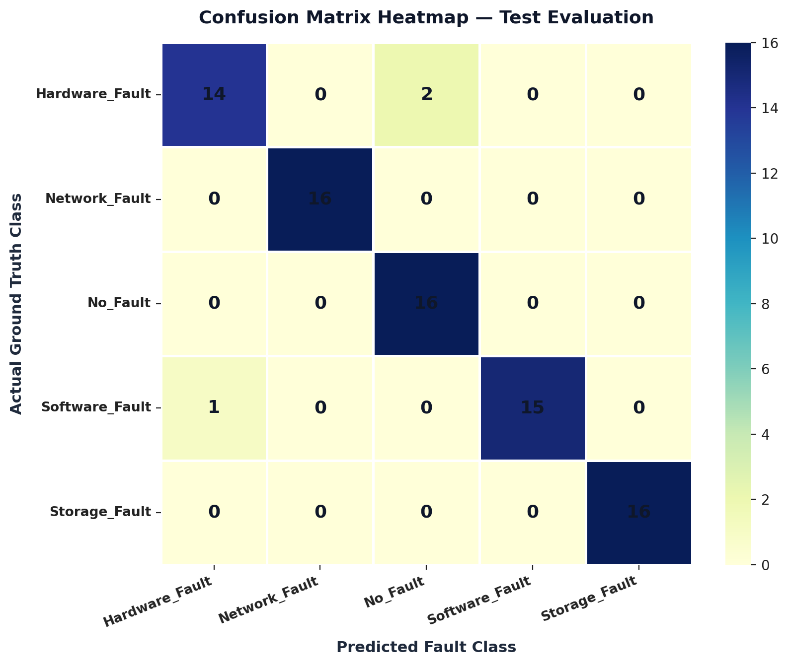
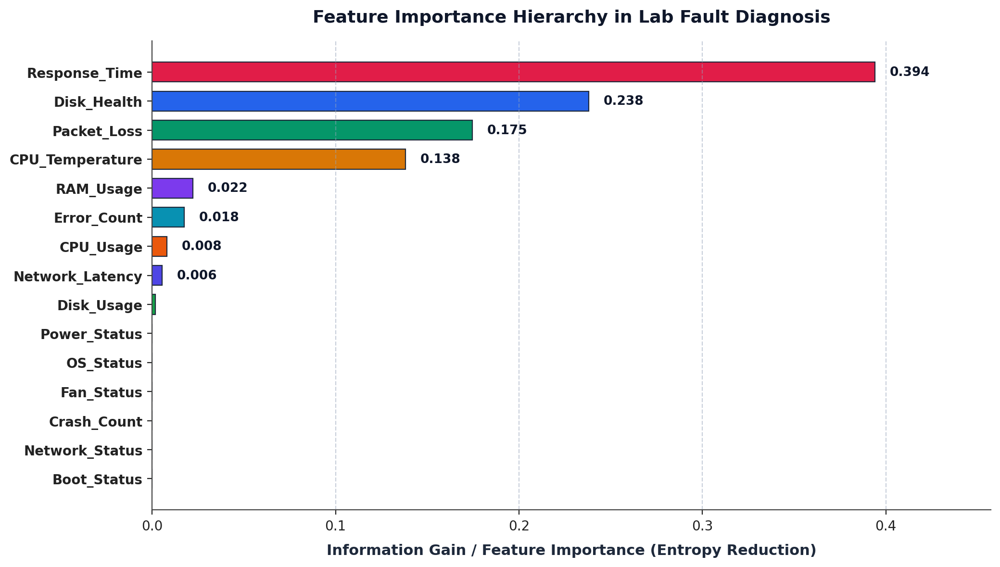
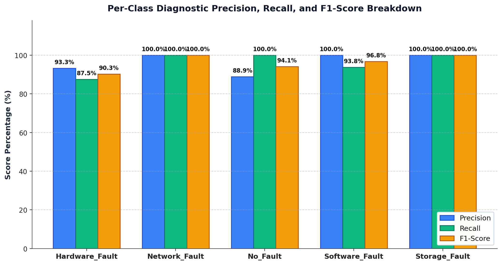

|
|
Pimpri Chinchwad Education Trust's Pimpri Chinchwad College of Engineering |
| Assignment No. 3 (Index: No. 6) — Program Execution Output | |
| Course:- Artificial Intelligence and Machine Learning | |
| Name:- Aditya Chandrajit Deore | |
| PRN:- 124B1F116 | Batch:- B3 | |
1. Title
AI-Based Computer Laboratory Fault Detection and Diagnosis Using Decision Tree Classification
2. Aim
To implement a Decision Tree classification algorithm for a real-life problem by developing an intelligent machine learning system that analyzes computer laboratory system parameters and automatically predicts the probable type of fault affecting a computer.
Program Execution Output (Part 1)
Execution trace of Decision Tree training, stratified cross-evaluation metrics, classification report, and confusion matrix on the 400 laboratory workstation dataset:
Program Execution Output (Part 2)
Simulated production workstation telemetry evaluation and rule-based technician maintenance prioritization:
Output Visualisations (Part 1)
The following charts were generated from the Decision Tree training and evaluation pipeline to illustrate tree decision logic and class-level prediction accuracy.

Figure 1: Full Decision Tree architecture and splitting rules (Criterion=Entropy, Max Depth=5).

Figure 2: Confusion matrix heatmap evaluated on the 20% holdout test dataset.
Output Visualisations (Part 2)

Figure 3: Feature importance breakdown calculated via Information Gain reduction.

Figure 4: Per-class diagnostic precision, recall, and F1-score across all 5 fault categories.
Generative AI Usage Declaration
The following describes the specific purposes for which Gemini was consulted during the development of this assignment:
- To understand the mathematical principles of Decision Tree classification algorithms, specifically Information Gain calculations, Shannon Entropy, and recursive partitioning mechanisms.
- To understand hyperparameter regularisation strategies (such as
max_depthandmin_samples_leaf) to prevent tree overfitting while maintaining high generalization accuracy. - To clarify diagnostic telemetry attribute design and realistic laboratory fault patterns across hardware, software, storage, and networking layers.
- To understand multi-class evaluation methodologies including stratified train-test splitting, confusion matrices, and macro-averaged precision, recall, and F1-scores.
- To understand how to convert raw Decision Tree outputs into post-classification rule-based maintenance recommendations for IT laboratory technicians.
Interaction Summary
The AI was used strictly as a conceptual reference and clarification tool. All code was written, structured, and debugged independently. The feature architecture, dataset design, model training pipeline, and maintenance rule engine were designed by myself with AI assistance limited to understanding the underlying theory.